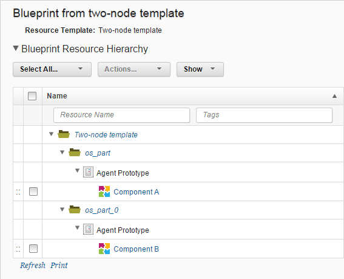

Creating blueprints for cloud environments that use virtual system patterns
Blueprints for clouds that use virtual system patterns (VSPs) map the components of an application to the agents on the virtual images in the VSP.
- Connect to a cloud that uses VSPs. See Connecting to clouds through HCL UrbanCode Deploy. The following clouds that use VSPs are supported by the HCL UrbanCode Deploy server:
- IBM Cloud Orchestrator version 2.4 or later
- IBM SmartCloud® Orchestrator versions 2.2 and 2.3
- IBM PureApplication® System version 1.0 or later
- IBM Workload Deployer version 3.1.0.6 or later
-
Import a resource template from the cloud. See Importing resource templates from clouds.
-
On the HCL UrbanCode Deploy server, click Applications, click your application, and then click Blueprints.
- Click Create Blueprint.
- Specify a name for the blueprint and select the resource template.
- Click Save. The new blueprint opens, showing the contents of the template, including the agent prototypes.
-
Map the components of the application to the agent prototypes:
- Hover the mouse over an agent prototype and then click Actions > Add Component.
- In the window that opens, select a component, specify its information, and click Save.
- Repeat this process to add the application components to the agent prototypes. Depending on how your application is organized, you can add the same component to multiple agent prototypes or multiple components to the same agent prototype. Note: If you create an environment from this blueprint and then add component mappings to the blueprint, the component mappings are also added to the environment. However, if you remove component mappings from the blueprint, the component mappings are not removed from the environment.
The complete application blueprint shows how the components are mapped to the agent prototypes. The following example shows a simple blueprint. The resource template contains two agent prototypes. In the blueprint, one component is mapped to each agent prototype.

Provision environments from this blueprint. See Provisioning environments through the server (through virtual system patterns).
Parent topic: Modeling environments for clouds that use virtual system patterns